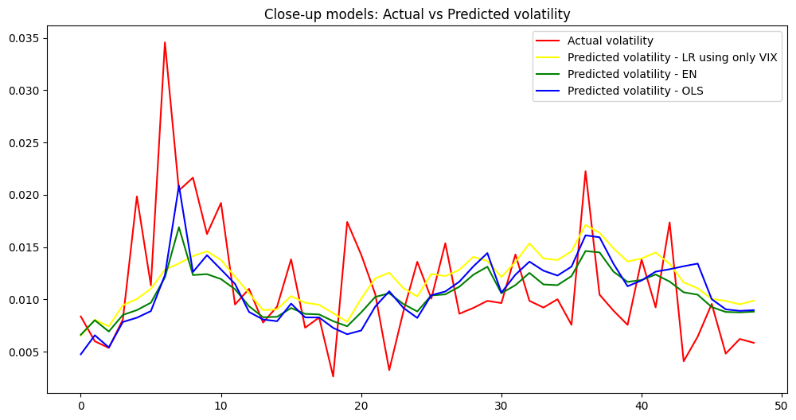
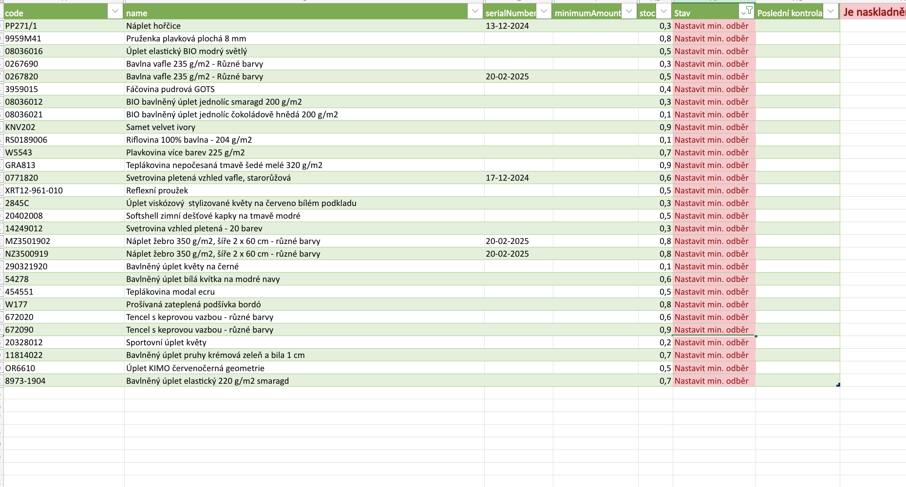

Portfolio

Market sentiment and attention driven algorithmic trading strategy
Bachelor's final project. This project designs and tests an algorithmic trading strategy on SPY ETF (2015–2024) driven by market sentiment and attention indicators (VIX, SKEW, Google Trends SVI). The goal is to assess whether these signals, processed via machine learning, can outperform a buy-and-hold benchmark. Performance is evaluated using metrics such as annual return, Sharpe ratio, and maximum drawdown.
View project
Analysis of the Impact of Sentiment on Stock Market Volatility
This project explores the relationship between market sentiment and the volatility of the S&P 500 index. The goal is to assess whether sentiment indicators (Google SVI, Financial News sentiment, VIX index) can help explain or predict market volatility. Part of the MUNI Datathon 2025.
View projectFactors Affecting the Prices of Used Porsche 911s
Projekt se zabývá analýzou cen ojetých vozů Porsche 911 pomocí vícenásobné lineární regrese (OLS). Cílem je identifikovat hlavní faktory, které ovlivňují jejich tržní cenu, na základě dat z online autobazaru.
View project
Inventory Report for a Textile E-commerce Store
Report slouží ke sledování stavu zásob skladu s metrovým textilem. Obsahuje kontrolu minimálního odběru na e-shopu, porovnání s aktuální metráží na skladě, upozornění na nesoulad v nastavení a přehled zboží, které je potřeba doobjednat.